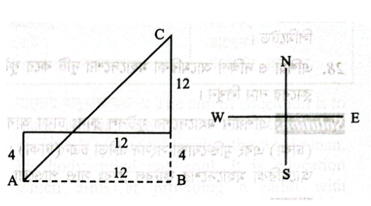

পানির পৃষ্ঠটান: পৃষ্ঠটানের জন্য পানির ফোঁটা সর্বনিম্ন ক্ষেত্রফল বিশিষ্ট গোলাকার রূপ ধারণ করে।
টিভি থেকে ক্ষতিকর রশ্মি: রঞ্জন রশ্মি বা এক্স-রে (X-ray)।
মৌলিক অধিকার: সংবিধানের ৩য় ভাগে অনুচ্ছেদ ২৬ থেকে ৪৭(ক) পর্যন্ত মোট ২২টি অধিকার।
পেত্রা: জর্ডানের লালচে পাথরে খোদাই করা প্রাচীন ঐতিহাসিক নগরী।
PART 2
বিগত বছরের প্রামাণ্য প্রশ্নব্যাংক ও ইন্টারঅ্যাক্টিভ কুইজ
অনুশীলন মোডে সমাধান দেখুন অথবা পরীক্ষা মোডে সময় মেপে নিজে মূল্যায়ন করুন
মূল্যায়ন স্কোর: ০ সঠিক | ০ আংশিক | ০ ভুল (মোট 26)
প্রশ্ন 01বাংলা | যৌগিক ক্রিয়া ও উদাহরণপূর্ণমান: 4
যৌগিক ক্রিয়া কাকে বলে? বিভিন্ন অর্থে যৌগিক ক্রিয়ার উদাহরণসমূহ লিখুন।
আত্মমূল্যায়ন:
💡 প্রামাণ্য সমাধান ও বিশদ ব্যাখ্যা দেখুন
সংজ্ঞা: একটি অসমাপিকা ক্রিয়া এবং একটি সমাপিকা ক্রিয়া যদি একত্রে যুক্ত হয়ে বিশেষ বা সম্প্রসারিত কোনো বিশিষ্ট অর্থ প্রকাশ করে, তবে তাকে যৌগিক ক্রিয়া বলে।
অসমাপিকা ক্রিয়া কয় ধরনের ও কী কী? উদাহরণসমূহ লিখুন।
আত্মমূল্যায়ন:
💡 প্রামাণ্য সমাধান ও বিশদ ব্যাখ্যা দেখুন
যে ক্রিয়াপদ দ্বারা বাক্যের অর্থ সম্পূর্ণ প্রকাশ পায় না এবং বক্তার বক্তব্যের পরিসমাপ্তি ঘটে না, তাকে অসমাপিকা ক্রিয়া বলে। অর্থ ও রূপের দিক থেকে অসমাপিকা ক্রিয়া সাধারণত তিন প্রকার:
ভূত বা অতীত অসমাপিকা ক্রিয়া: পূর্বে সংঘটিত কাজ প্রকাশ করতে (যেমন: ফাহিম ক্রিকেট খেলে আনন্দ পায়; সে বাড়ি গিয়ে ভাত খাবে)।
ভাবী বা ভবিষ্যৎ অসমাপিকা ক্রিয়া: উদ্দেশ্যাত্মক বা সম্ভাব্য অর্থ প্রকাশ করতে (যেমন: সে সাইকেল চালাতে মাঠে যায়; খোকা পড়তে বসবে)।
শর্তবাচক অসমাপিকা ক্রিয়া: কোনো শর্তের ওপর নির্ভরতা বোঝাতে (যেমন: নিয়মিত সাঁতার কাটলে শরীর ও মন ভালো থাকে; মেঘ করলে বৃষ্টি হবে)।
প্রশ্ন 03বাংলা | সর্বনামের প্রকারভেদপূর্ণমান: 3
আত্মবাচক সর্বনাম ও অনির্দিষ্ট সর্বনামের দুটি করে উদাহরণসহ পরিচয় লিখুন।
আত্মমূল্যায়ন:
💡 প্রামাণ্য সমাধান ও বিশদ ব্যাখ্যা দেখুন
১. আত্মবাচক সর্বনাম (Reflexive Pronoun):
কর্তা নিজেই কোনো কাজ করছে—এই ভাবটি বিশেষভাবে জোর দিয়ে বোঝানোর জন্য যে সর্বনাম ব্যবহৃত হয়, তাকে আত্মবাচক সর্বনাম বলে। উদাহরণ:
সে নিজে অঙ্কটা সমাধান করেছে।
মন্ত্রী স্বয়ং (বা খোদ) ঘটনাস্থল পরিদর্শন করেছেন।
২. অনির্দিষ্ট সর্বনাম (Indefinite Pronoun):
কোনো ব্যক্তি বা বস্তুকে সুনির্দিষ্টভাবে চিহ্নিত না করে অনির্দিষ্টভাবে বোঝাতে যে সর্বনাম ব্যবহৃত হয়, তাকে অনির্দিষ্ট সর্বনাম বলে। উদাহরণ:
কেউ একজন এসে জরুরি খবরটা পৌঁছে দিয়ে গেল।
তার বিপদে কিছু টাকা সাহায্য করো।
প্রশ্ন 04বাংলা | প্রকৃতি ও প্রত্যয় নির্ণয়পূর্ণমান: 3
প্রকৃতি ও প্রত্যয় নির্ণয় করুন: a) পথিক b) বিবাহিত c) কথ্য
আত্মমূল্যায়ন:
💡 প্রামাণ্য সমাধান ও বিশদ ব্যাখ্যা দেখুন
শব্দ
প্রকৃতি ও প্রত্যয়
প্রত্যয়ের প্রকার
অর্থ
পথিক
পথিন্ + ইক (অক)
তদ্ধিত প্রত্যয়
যে পথ চলে
বিবাহিত
বিবাহ + ইত
তদ্ধিত প্রত্যয়
যার বিবাহ হয়েছে
কথ্য
√কথ্ + য (ক্যাপ)
কৃৎ প্রত্যয়
যা বলার যোগ্য
প্রশ্ন 05বাংলা | বাংলা সাহিত্য ও গ্রন্থ পরিচিতিপূর্ণমান: 5
নিচের গ্রন্থগুলোর লেখকের নাম ও সাহিত্যিক শ্রেণি (গ্রন্থের ধরন) উল্লেখ করুন: a) দণ্ডকারণ্য b) কাঁদো নদী কাঁদো c) উর্বশী ও আর্টেমিস d) সতীময়না ও লোরচন্দ্রানী e) প্রাগৈতিহাসিক
আত্মমূল্যায়ন:
💡 প্রামাণ্য সমাধান ও বিশদ ব্যাখ্যা দেখুন
গ্রন্থের নাম
লেখকের নাম
সাহিত্য রূপ / শ্রেণি
a) দণ্ডকারণ্য
মুনীর চৌধুরী
ঐতিহাসিক নাটক (১৯৬৬)
b) কাঁদো নদী কাঁদো
সৈয়দ ওয়ালীউল্লাহ
চেতনাপ্রবাহমূলক উপন্যাস (১৯৬৮)
c) উর্বশী ও আর্টেমিস
বিষ্ণু দে
আধুনিক কাব্যগ্রন্থ (১৯৩২)
d) সতীময়না ও লোরচন্দ্রানী
দৌলত কাজী
মধ্যযুগের রোমান্টিক প্রণয়কাব্য
e) প্রাগৈতিহাসিক
মানিক বন্দ্যোপাধ্যায়
বিখ্যাত মনস্তাত্ত্বিক ছোটগল্প (১৯৩৭)
প্রশ্ন 06বাংলা | এক কথায় প্রকাশ ও বাগধারাপূর্ণমান: 4
সংক্ষেপে সমাধান করুন: (১) এক কথায় প্রকাশ করুন: a) যিনি ন্যায়শাস্ত্র জানেন b) যার কিছু নেই (২) অর্থসহ বাক্য গঠন করুন: a) শিয়ালের যুক্তি b) কথার ফুলঝুরি
আত্মমূল্যায়ন:
💡 প্রামাণ্য সমাধান ও বিশদ ব্যাখ্যা দেখুন
(১) এক কথায় প্রকাশ:
যিনি ন্যায়শাস্ত্র জানেন = নৈয়ায়িক
যার কিছু নেই = অকিঞ্চন
(২) অর্থসহ বাক্য গঠন:
শিয়ালের যুক্তি (অকেজো বা ফাঁকিবাজিমূলক যুক্তি): কাজে মারাত্মক ভুল করে এখন শিয়ালের যুক্তি দেখিয়ে নিজের দোষ ঢাকতে পারবে না।
কথার ফুলঝুরি (বাকপটুতা বা মিষ্টি কথার বিস্তার): জীবনে সফল হতে চাইলে কথার ফুলঝুরি না ছুটিয়ে কাজে মনোযোগ দেওয়া উচিত।
প্রশ্ন 07বাংলা | কারক ও বিভক্তি নির্ণয়পূর্ণমান: 4
নিচের রেখাঙ্কিত পদের কারক ও বিভক্তি নির্ণয় করুন: a) 'ঝিনুক থেকে মুক্তা মেলে।' b) 'পাহাড়ের ঢাল বেয়ে জল নামছে।'
আত্মমূল্যায়ন:
💡 প্রামাণ্য সমাধান ও বিশদ ব্যাখ্যা দেখুন
প্রদত্ত বাক্য
রেখাঙ্কিত পদ
কারক ও বিভক্তি
ব্যাকরণগত ব্যাখ্যা
ঝিনুক থেকে মুক্তা মেলে।
ঝিনুক
অপাদান কারকে শূন্য বিভক্তি
যা হতে কোনো বস্তু উৎপন্ন বা গৃহীত হয়, তা অপাদান কারক ('থেকে' অনুসর্গ যোগে)।
পাহাড়ের ঢাল বেয়ে জল নামছে।
জল
কর্তৃকারকে শূন্য বিভক্তি
নামার কাজটি স্বয়ং 'জল' সম্পন্ন করছে (ক্রিয়াপদকে 'কে নামছে' প্রশ্ন করলে 'জল' পাওয়া যায়)।
প্রশ্ন 08বাংলা | সন্ধি বিচ্ছেদপূর্ণমান: 5
সন্ধি বিচ্ছেদ করুন: a) কথোপকথন b) ঢাকেশ্বরী c) জলোকা d) অন্বিত e) শয়ন
আত্মমূল্যায়ন:
💡 প্রামাণ্য সমাধান ও বিশদ ব্যাখ্যা দেখুন
শব্দ
সন্ধি বিচ্ছেদ
সন্ধির সূত্র
কথোপকথন
কথা + উপকথন
আ + উ = ও-কার
ঢাকেশ্বরী
ঢাকা + ঈশ্বরী
আ + দীর্ঘ ঈ = এ-কার
জলোকা
জল + ওকা
অ + ও = ঔ / ও-কার
অন্বিত
অনু + ইত
উ + ই = ব্ + ই (বি)
শয়ন
শে + অন
এ + অ = অয়্ + অ (অয়)
প্রশ্ন 09বাংলা | ব্যাসবাক্যসহ সমাসপূর্ণমান: 5
ব্যাসবাক্যসহ সমাসের নাম লিখুন: a) তুলনামূলক b) মধ্যবিত্ত c) শশব্যস্ত d) দ্বীপ e) চৌকাঠ
Change the speech (Direct to Indirect Narration): a) He said, 'You had better see a doctor'. b) The officer said to the manager, 'Sir I need one day leave'. c) The boy said, 'Sir, may I go out?'
আত্মমূল্যায়ন:
💡 প্রামাণ্য সমাধান ও বিশদ ব্যাখ্যা দেখুন
Direct Speech
Indirect Speech
Explanation
a) He said, 'You had better see a doctor'.
He advised him to see a doctor.
'Had better' দিয়ে পরামর্শ বোঝানোয় Reporting verb হিসেবে 'advised' বসে।
b) The officer said to the manager, 'Sir I need one day leave'.
The officer respectfully requested the manager that he needed one day leave.
'Sir'-এর জন্য 'respectfully' এবং ছুটির প্রার্থনায় 'requested' ব্যবহৃত হয়।
c) The boy said, 'Sir, may I go out?'
The boy respectfully asked the teacher (or sir) whether he might go out.
Make sentences with the following phrases/idioms: a) Once in a blue moon b) Be-all and end-all c) Ducks and drakes d) Fair and square e) Palmy day
আত্মমূল্যায়ন:
💡 প্রামাণ্য সমাধান ও বিশদ ব্যাখ্যা দেখুন
Idiom & Phrase
বাংলা অর্থ
English Meaning
Exemplary Sentence
a) Once in a blue moon
কদাচিৎ / খুব বিরল
Very rarely
Since moving abroad, Rahim visits our ancestral village once in a blue moon.
b) Be-all and end-all
একমাত্র চরম লক্ষ্য / সর্বস্ব
The ultimate aim
Passing the examination is important, but it is not the be-all and end-all of life.
c) Ducks and drakes
নয়ছয় করা / অপব্যয় করা
Squander recklessly
The prodigal youth played ducks and drakes with his father's hard-earned wealth.
d) Fair and square
সৎ ও নিষ্ঠাবান / ন্যায্যভাবে
Honest and just
He won the prestigious competitive tournament fair and square.
e) Palmy day
সুদিন / সমৃদ্ধির সুবর্ণ সময়
A time of prosperity
In his palmy days, he was surrounded by hundreds of cheerful companions.
প্রশ্ন 12English | Translation into Englishপূর্ণমান: 5
Translate into English: a) বর্ষা আরম্ভ হয়েছে। b) আমি যদি তার নামটি আগে জানতাম। c) মুক্তিযুদ্ধে ত্রিশ লক্ষ লোক প্রাণ বিসর্জন দিয়েছিল। d) জাহাজটি নোঙ্গর করল। e) যত বেশি তত খুশি।
আত্মমূল্যায়ন:
💡 প্রামাণ্য সমাধান ও বিশদ ব্যাখ্যা দেখুন
বাংলা বাক্য
English Translation
Grammar Rule
a) বর্ষা আরম্ভ হয়েছে।
The rains have set in.
ঋতু আরম্ভ হওয়া বোঝাতে phrasal verb 'set in' বসে।
b) আমি যদি তার নামটি আগে জানতাম।
Had I known his name earlier! (or If I had known his name earlier.)
Unfulfilled condition-এ Past Perfect tense.
c) মুক্তিযুদ্ধে ত্রিশ লক্ষ লোক প্রাণ বিসর্জন দিয়েছিল।
In the liberation war, three million people sacrificed their lives.
ত্রিশ লক্ষ = Three million; Past Indefinite tense.
d) জাহাজটি নোঙ্গর করল।
The ship anchored. (or The ship was anchored / cast anchor.)
'Anchor' ক্রিয়াপদ হিসেবে বা 'cast anchor' ব্যবহৃত হয়।
Use the right form of verbs: a) I don't mind (help) with the cooking but I am not going to wash the dishes. b) Would that I (see) a tiger. c) He ran fast lest he (miss) the train. d) Would you mind (have) a meal with us? e) We expected the function to be (finish).
আত্মমূল্যায়ন:
💡 প্রামাণ্য সমাধান ও বিশদ ব্যাখ্যা দেখুন
Sentence with Verb
Correct Form
পূর্ণাঙ্গ বাক্য ও নিয়ম
a) I don't mind (help)...
helping
'Mind / don't mind'-এর পর Verb + ing (Gerund) বসে।
b) Would that I (see)...
could see
অবাস্তব ইচ্ছা প্রকাশে 'Would that'-এর পর Subject + could + \(V_1\) বসে।
c) He ran fast lest he (miss)...
should miss
'Lest'-এর পর Subject + should + \(V_1\) আবশ্যক।
d) Would you mind (have)...
having
'Would you mind'-এর পর সর্বদা Verb-ing হয়।
e) We expected the function to be (finish).
finished
'To be'-এর পর passive sense-এ Past Participle (\(V_3\)) বসে।
(১) Transform the following sentences as directed: a) The driver pulled the brake of the car and stopped it. (Make it compound) b) Health is wealth. (Make it negative) c) I wish I had the wings of a bird. (Make it exclamatory) d) In spite of his having riches, he leads a poor life. (Make it complex) (২) Fill in the gaps with appropriate preposition: a) He is deaf ___ my request. b) The nurse waited ___ the patient. c) I wonder ___ his ignorance.
আত্মমূল্যায়ন:
💡 প্রামাণ্য সমাধান ও বিশদ ব্যাখ্যা দেখুন
(১) Transformation of Sentences:
Base Sentence
Directed Form
Transformed Sentence
a) The driver pulled the brake of the car and stopped it.
Compound
The driver pulled the brake of the car and he stopped the car.
b) Health is wealth.
Negative
Isn't health wealth? (or Health is nothing but wealth.)
c) I wish I had the wings of a bird.
Exclamatory
Had I the wings of a bird! (or If I had the wings of a bird!)
d) In spite of his having riches, he leads a poor life.
Complex
Though he has riches, he leads a poor life.
(২) Appropriate Prepositions:
a) He is deaf to my request. (আমার অনুরোধে তিনি কর্ণপাত করলেন না।)
b) The nurse waited on (or upon) the patient. (নার্স রোগীটির পরিচর্যা ও সেবা করেছিলেন; wait on = সেবা করা)।
c) I wonder at his ignorance. (তার অজ্ঞতা দেখে আমি বিস্মিত হলাম।)
a) Write four focused sentences on 'Smart Bangladesh'. b) Correct the sentence: 'It was twenty years ago that he died.'
আত্মমূল্যায়ন:
💡 প্রামাণ্য সমাধান ও বিশদ ব্যাখ্যা দেখুন
(a) Four sentences on 'Smart Bangladesh':
'Smart Bangladesh' is the strategic national vision aimed at transforming Bangladesh into an inclusive, technologically advanced, and knowledge-based prosperous nation by 2041.
The blueprint of Smart Bangladesh stands firmly on four foundational pillars: Smart Citizen, Smart Economy, Smart Government, and Smart Society.
Under this transformation, all governance, agricultural services, healthcare, and educational curricula will leverage hyper-connectivity, AI, and paperless digital systems.
The ultimate goal is to bridge the digital divide and ensure sustainable, cost-effective, and citizen-centric prosperity across both urban hubs and rural communities.
(b) Sentence Correction:
অশুদ্ধ: It was twenty years ago that he died.
শুদ্ধ: Twenty years have passed since he died. (বা He died twenty years ago.) ব্যাখ্যা: 'Since'-এর নিয়ম অনুযায়ী প্রথম অংশে Present Perfect tense এবং দ্বিতীয় অংশে Past Indefinite tense বসে।
প্রশ্ন 16গণিত | জ্যামিতি: বৃত্তের ক্ষেত্রফল ও ব্যাসপূর্ণমান: 5
বৃত্তের ব্যাস চারগুণ বৃদ্ধি পেলে ক্ষেত্রফল কতগুণ বৃদ্ধি পাবে?
আত্মমূল্যায়ন:
💡 প্রামাণ্য সমাধান ও বিশদ ব্যাখ্যা দেখুন
সমাধান:
ধরি, বৃত্তের আদি ব্যাস \(= d\) এবং ব্যাসার্ধ \(r = \frac{d}{2}\)।
\(\therefore\) আদি ক্ষেত্রফল \(A_1 = \pi r^2 = \pi \left(\frac{d}{2}\right)^2 = \frac{\pi d^2}{4}\)
এখন, ব্যাস চারগুণ বৃদ্ধি করলে নতুন ব্যাস হবে \(D = 4d\)।
\(\therefore\) নতুন ব্যাসার্ধ \(R = \frac{4d}{2} = 2d\)।
\(\therefore\) নতুন ক্ষেত্রফল \(A_2 = \pi R^2 = \pi (2d)^2 = 4\pi d^2 = 16 \times \left(\frac{\pi d^2}{4}\right) = 16 A_1\)
অতএব, বৃত্তের ক্ষেত্রফল আদি ক্ষেত্রফলের ১৬ গুণ হবে।
প্রশ্ন 19গণিত | মানসিক দক্ষতা: দিক ও দূরত্ব (IQ Direction)পূর্ণমান: 5
একজন ব্যক্তি ভ্রমণে ৪ মাইল উত্তরে, ১২ মাইল পূর্বে, তারপর আবার ১২ মাইল উত্তরে যায়। সে শুরুর স্থান থেকে সরাসরি কত মাইল দূরে অবস্থিত?
আত্মমূল্যায়ন:
💡 প্রামাণ্য সমাধান ও বিশদ ব্যাখ্যা দেখুন
সমাধান:

ধরি, যাত্রার শুরুর স্থান \(A\)। ব্যক্তিটি প্রথমে উত্তরে ৪ মাইল যায়। তারপর পূর্বে ১২ মাইল যায় এবং সেখান থেকে পুনরায় উত্তরে ১২ মাইল গিয়ে \(C\) বিন্দুতে পৌঁছায়।
চিত্রানুসারে, অনুভূমিক পূর্বমুখী সরণ \(AB = 12\) মাইল।
উল্লম্ব উত্তরমুখী মোট সরণ \(BC = 4 + 12 = 16\) মাইল।
এখানে \(\Delta ABC\) একটি সমকোণী ত্রিভুজ, যার \(\angle B = 90^\circ\)।
পিথাগোরাসের উপপাদ্য অনুযায়ী, শুরুর স্থান \(A\) থেকে চূড়ান্ত অবস্থান \(C\)-এর সরাসরি দূরত্ব:
$$(AC)^2 = (AB)^2 + (BC)^2$$
$$\implies (AC)^2 = (12)^2 + (16)^2 = 144 + 256 = 400$$
$$\implies AC = \sqrt{400} = 20 \text{ মাইল}$$
উত্তর: শুরুর স্থান থেকে সরাসরি ২০ মাইল দূরে।
প্রশ্ন 20বাংলাদেশ বিষয়াবলি | জাতীয় সংসদ ও কাস্টিং ভোটপূর্ণমান: 3
জাতীয় সংসদের 'কাস্টিং ভোট' (Casting Vote) কী এবং কে এই ভোট প্রয়োগ করেন?
আত্মমূল্যায়ন:
💡 প্রামাণ্য সমাধান ও বিশদ ব্যাখ্যা দেখুন
কাস্টিং ভোটের সংজ্ঞা:
জাতীয় সংসদে কোনো বিল বা প্রস্তাবের ওপর সাধারণ সদস্যদের ভোটগ্রহণের পর যদি পক্ষে ও বিপক্ষে সমান সংখ্যক ভোট পড়ে (Tie অবস্থা), তখন সৃষ্ট অচলাবস্থা নিরসনের জন্য সভাপতি বা স্পিকার যে চূড়ান্ত ও নিষ্পত্তিকারী ভোট প্রদান করেন, তাকে কাস্টিং ভোট বলে।
সংবিধানের বিধান:
সংবিধানের ৭৫(১)(খ) অনুচ্ছেদ অনুযায়ী স্পিকার সাধারণত প্রথমবারে ভোট দেন না; কেবল দুই পক্ষের ভোট সমান হলেই তিনি এই কাস্টিং ভোট প্রয়োগ করতে পারেন।
প্রশ্ন 21সাধারণ বিজ্ঞান | পদার্থবিজ্ঞান: বিকিরণ ও পৃষ্ঠটানপূর্ণমান: 4
সংক্ষেপে বৈজ্ঞানিক কারণসহ উত্তর দিন: a) রঙিন টেলিভিশন হতে ক্ষতিকর কোন রশ্মি বের হয়? b) বৃষ্টির বা পানির ছোট ফোঁটা কোন ধর্মের কারণে গোলাকৃতি রূপ ধারণ করে?
আত্মমূল্যায়ন:
💡 প্রামাণ্য সমাধান ও বিশদ ব্যাখ্যা দেখুন
(a) রঙিন টেলিভিশন থেকে নির্গত রশ্মি:
রঙিন টেলিভিশন (বিশেষ করে ক্যাথোড রে টিউব বা CRT ডিসপ্লে)-এর ইলেকট্রন গানের উচ্চগতির ইলেকট্রন যখন কাঁচের পর্দায় আঘাত করে, তখন অতি ক্ষুদ্র তরঙ্গদৈর্ঘ্যের তড়িৎ-চৌম্বকীয় বিকিরণ হিসেবে মৃদু রঞ্জন রশ্মি বা এক্স-রে (X-ray) নির্গত হয়। আধুনিক এলইডি/ওএলইডি টিভিতে এই ঝুঁকি নেই বললেই চলে।
(b) পানির ফোঁটার গোলাকার রূপ:
পানির অণুগুলোর মধ্যকার পারস্পরিক সংশক্তি বলের (Cohesive force) কারণে তরল পৃষ্ঠ সর্বদা তার ক্ষেত্রফলকে ন্যূনতম আকারে সংকুচিত রাখতে চায়। তরলের এই বিশেষ ভৌত ধর্মকে পৃষ্ঠটান (Surface Tension) বলে। যেহেতু নির্দিষ্ট আয়তনের জন্য গোলকের ক্ষেত্রফল সবচেয়ে কম হয়, তাই পৃষ্ঠটানের প্রভাবে পানির ফোঁটা সর্বদা গোলাকার রূপ ধারণ করে।
প্রশ্ন 22বাংলাদেশ বিষয়াবলি | শিল্প ও ক্রীড়াপূর্ণমান: 4
সংক্ষেপে উত্তর দিন: a) বাংলাদেশের দুটি রাষ্ট্রায়ত্ত চিনিকলের নাম লিখুন। b) এশিয়া ও দক্ষিণ আমেরিকা মহাদেশের দুটি করে বিখ্যাত ফুটবল ক্লাবের নাম লিখুন।
আমেরিকার চারজন বিখ্যাত রাষ্ট্রপতির মুখাবয়ব খোদাই করা পর্বত ভাস্কর্য।
d) পেত্রা
জর্ডান
গোলাপি রঙের পাথরে খোদাই করা প্রাচীন আরব নাবাতীয় নগরী (বিশ্ব ঐতিহ্য ও সপ্তাশ্চর্য)।
প্রশ্ন 25বাংলাদেশ বিষয়াবলি | সংবিধানে মৌলিক অধিকারপূর্ণমান: 5
গণপ্রজাতন্ত্রী বাংলাদেশের সংবিধানে মৌলিক অধিকারের অনুচ্ছেদ কয়টি? যে কোনো দুটি গুরুত্বপূর্ণ মৌলিক অধিকারের অনুচ্ছেদসহ ব্যাখ্যা লিখুন।
আত্মমূল্যায়ন:
💡 প্রামাণ্য সমাধান ও বিশদ ব্যাখ্যা দেখুন
মৌলিক অধিকারের অনুচ্ছেদ সংখ্যা:
বাংলাদেশের সংবিধানের তৃতীয় ভাগে অনুচ্ছেদ ২৬ থেকে ৪৭(ক) পর্যন্ত মোট ২২টি অনুচ্ছেদে নাগরিকদের মৌলিক অধিকার নিশ্চিত ও সুরক্ষিত করা হয়েছে।
দুটি গুরুত্বপূর্ণ মৌলিক অধিকার:
আইনের দৃষ্টিতে সমতা (অনুচ্ছেদ ২৭): সকল নাগরিক আইনের দৃষ্টিতে সমান এবং আইনের সমান আশ্রয় লাভের অধিকারী।
চিন্তা, বিবেক ও বাক-স্বাধীনতা (অনুচ্ছেদ ৩৯): প্রত্যেক নাগরিকের চিন্তা ও বিবেকের স্বাধীনতা এবং রাষ্ট্রের নিরাপত্তা ও শালীনতার সাপেক্ষে বাক-স্বাধীনতা ও সংবাদপত্রের স্বাধীনতার নিশ্চয়তা প্রদান।